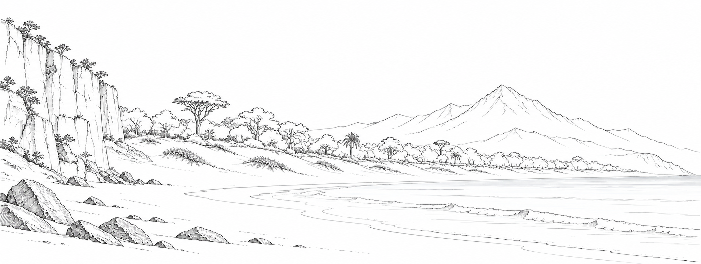

The same candidate is shown above all three tabs. These screenshots are preview derivatives, not production artwork exports or completed runtime integration.
Area · desktop · Crafting · desktop · Building · desktop · Area · phone